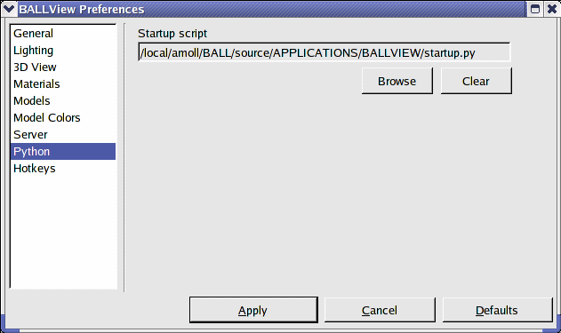
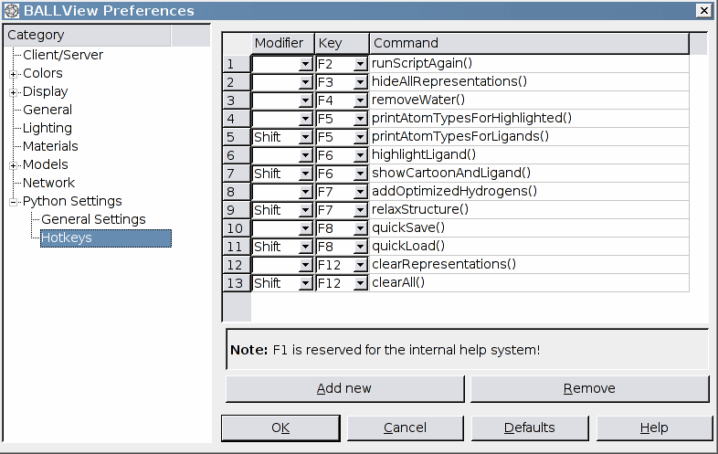

|
a = AtomCon[Shift + Key_Right] |
To get context sensitive help for the current line, write your line of code and press "Enter" (from the numlock block) or "Shift-F1" after the name of the method (like above). This pops up a window with the BALL documentation for the class and member.
Setup a Python startup script

An example for a startup script:
def createStickModel():
dp = DisplayProperties.getInstance(0)
dp.setDrawingPrecision(DRAWING_PRECISION_HIGH)
dp.selectMode(DRAWING_MODE_SOLID)
dp.selectModel(MODEL_STICK)
dp.selectColoringMethod(COLORING_ELEMENT)
dp.setTransparency(0)
dp.apply()
def removeWater():
getMainControl().clearSelection()
if getMolecularControlSelection().applySelector("residue(HOH)") == 0:
return
getMolecularControl().cut()
|
Python hotkeys
BALLView can bind any Python command to an hotkey for the F-keys. By using the Shift-modifier, BALLView can have up to 24 different hotkeys additional to the standard hotkeys for menu entries. This enables the user to accelerate repetitive tasks dramatically. Furthermore all Python Hotkeys are show as entries in the "User" menu. The standard startup Python Scripts defines many different shortcuts, which can be mapped to any F-key. Thereby a user can e.g. remove all water molecules in the loaded Systems with one key press. Of course, it is also possible to start methods defined in the user startup script or external Python scripts with a hotkey: Just add an hotkey entry with runScript("filename").

| Method | Note |
| runScriptAgain() | Runs last executed script in the python interpreter. If no script was executed earlier, the interpreter prints the message "Could not find file" |
| hideAllRepresentations() | Disables all representations in the representations view |
| removeWater() | Remove water molecules of all loaded systems. Remark: All selected molecular entities are deselected. |
| printAtomTypesForHighlighted() | Print atoms with their type for all highlighted residues |
| printAtomTypesForLigands() | Highlight existing ligands for one highlighted system and print all atoms of the ligands. See also highlightLigand() |
| highlightLigand() | Highlight existing ligands for one highlighted system. If no system is highlighted the first one is taken. Remark: All water molecules are removed. |
| showCartoonAndLigand() | Create a cartoon model with coloring by residue index for one highlighted system and a Van-Der-Waals model for its ligands. If no system is highlighted the first one is taken. Remark: All other representations are removed: |
| addOptimizedHydrogens() | Add hydrogens to one highlighted system and select them to perform a energy minimization. If no system is highlighted the first one is taken. |
| relaxStructure() | Add optimized hydrogens to one loaded system and perform a MD simulation for this system. Remark: Settings for MDS and minimization are take from the corresponding dialog. |
| quickSave() | Save current BALLView session in a project file. Remark: The file is stored in the users home directory under the name "quick.bvp" |
| quickLoad() | Load project file "quick.bvp" from the home directory. See also quickSave() |
| clearRepresentations() | Remove all representations in the representations view. |
| clearAll() | Remove all loaded systems and all representations. Remark: The datasets are not removed |